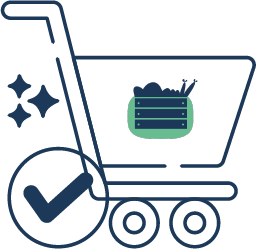
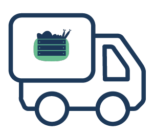
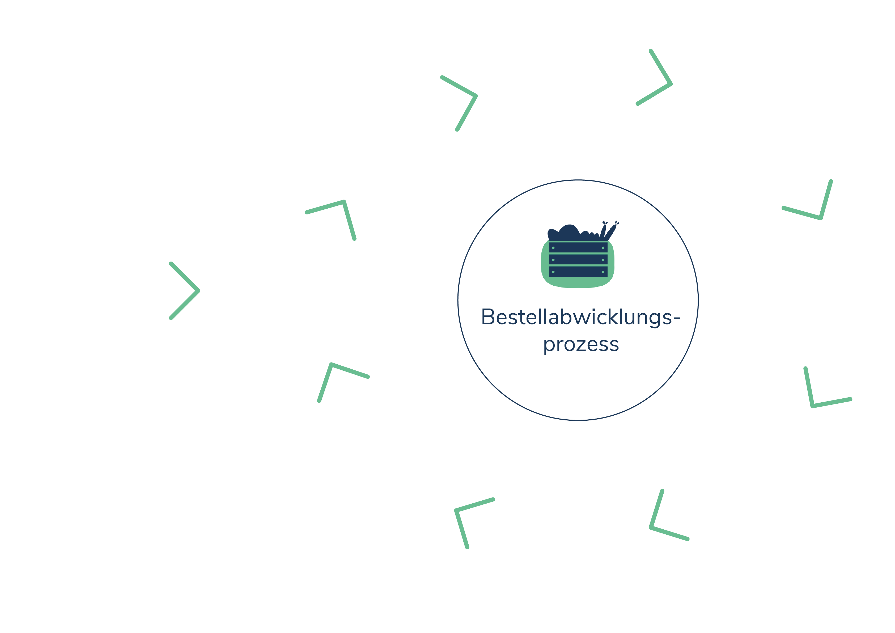

Vorteile für Landwirten
- Regelmäßige Bestellungen
- Potentielle und gezielte Kunden
- Wertschätzung gegenüber Ware und Arbeit
- Kundentreue und Zahlungsmoral
- Aktualität – mit der Zeit gehen
- Offen für Neues (Herausforderung)
Was für einen Betrieb hast du?


Das Projekt landchef befasst sich mit der Erstellung einer Plattform für Gastronomen und Landwirte. Sie soll Gastronomen dazu dienen, Landwirte für den Direktbezug zu finden und ein Bestellsystem enthalten, mit dem Landwirte Aufträge entgegennehmen und verwalten können.

Die landchef Philosophie beruht zum einen darauf, die Region zu stärken und Persönlichkeit und Wertschätzung unter den Menschen zu fördern. Daher ist die landchef Partnerschaft die Grundlage für das landchef Konzept.
anderen möchte landchef Landwirte in ihrer Arbeit unterstützten und über die Direktvermarktung Alternativen für ein sicheres Einkommen erleichtern. Dabei legt das landchef Team besonderen Wert, den Menschen stupide Arbeit abzunehmen, um Zeit für persönliche Arbeit und Beziehungen zu schenken.
Außerdem möchte das landchef Team als Vorbild fungieren und partnerschaftlich mit seinen eigenen Kunden umgehen. So erhält Ehrlichkeit eine besondere Bedeutung in der Gestaltung des landchef Konzepts.
Das Konzept der Partnerschaft ist nicht für jeden das richtige. Hierbei liegt vor allem im Fokus, Werte und Dienstleistungen in dem Verkaufsprozess zu integrieren und mit einer hohen Priorität zu versehen.
Im Vordergrund steht, dass der Landwirt nicht nur seine Ware anbietet und verkauft, sondern auch sein Wissen, seine Geschichte und seine Werte in eine Dienstleistung verpackt. Darunter gehören Pünktlichkeit und Zuverlässigkeit, Sortimentabstimmung, Flexibilität, sowie empfohlenerweise Innovationsfähigkeit. Das Konzept unterstützt dabei die Regionalität, Wertschätzung und Nachhaltigkeit der Waren.
Der Landwirt verpackt die Ware und kann den Bestellstatus anpassen.
Der Landwirt bereitet die Bestellungen vor mithilfe der Übersichtsfunktion der landchef App.
Der Landwirt erhält den Bestellauftrag vom Gastronomen.
Nach Vorbereitung der bestellten Ware, wird die Ware direkt geliefert.
Der Gastronom gibt im besprochenen Zeitraum seine gewünschte Bestellmenge vom besprochenen Angebot an und sendet den Bestellauftrag über die landchef App an den Landwirten.
In einem persönlichen Gespräch wird ein indivuelles Angebot ausgemacht.
Der Landwirt verschickt die vom System automatisch generierte Rechnung an den Gastronom.
Der Gastronom erhält seine Lieferung.
Der Gastronom bezahlt die Ware vom Landwirten.
Auf der Suche der Landwirte nach neuen Absatzmärkten und der Nachfrage der Gastronomen nach lokalen Waren begegnen beide einem umständlichen Bestellprozess.
Direktvermarktung stellt für Landwirte einen attraktiven Markt dar. Sie können ihre Produkte zu höheren Preisen direkt an ihre Kunden bringen. Die Ware kann so ohne Umwege und Zwischenhändler an die Kunden gelangen und der Landwirt erhält den gesamten Umsatz.
Für Gastronomen ist der direkte Bezug ein ebenso attraktives wie notwendiges Unterfangen. Der Trend geht bei Konsumenten klar in Richtung lokaler Lebensmittel und Gastronomien aller Art versuchen diesem Wunsch nachzukommen.
Für Gastronomen wie Landwirte ist es jedoch zu Beginn oft schwierig, die passenden Geschäftspartner zu finden. Besonders für Landwirte ist es oftmals schwierig mit Rückgrat hinter ihren Produkten zu stehen und einen angemessenen Preis zu verlangen.
Der Bestellprozess in der Direktvermarktung ist zurzeit noch recht aufwändig. Kunden bestellen per Telefon, Fax, Email oder Whatsapp. Es fehlt an einem einzigen Kanal, der Bestellungen bündeln und für Landwirte übersichtlich darstellen kann.

Landchef fungiert als eine Art Mittler im Direktverkauf von Landwirte an Gastronomen.

Partner statt Kunden.
Heutzutage sind viele Kaufprozesse sehr nüchtern und neutral. Der persönliche Wert verschwindet immer mehr in Bild der Digitalisierung. Jedoch ist hierbei vor allem die Frage, wie die heutigen Medien genutzt werden. Landchef sieht eine Chance darin, regionale Kontakte durch Vernetzung wiederherszustellen, zu fördern und zu erleichtern. Die nimmt die App den persönlichen Kontakt nicht völlig ab und erinnert an die Vorteile einer solchen Beziehung.
Die Partner Sektion bietet einen direkten Kanal zu allen Kontakten, die ein Landwirt zurzeit pflegt. Bestehende und vergangene Partner werden hier aufgelistet. Klickt der Nutzer auf einenPartner, kann er alle Informationen über diesen Kontakt einsehen. Dazu gehören wichtige Angaben wie der Ansprech- partner, die Adresse (sowie abweichende Liefer- und Rechnungsadressen), und Kontaktinformationen.
Zudem zeigt diese Ansicht einen Zeitstrahl, der die Partnerschaft der beiden aufbereitet. Zu sehen ist der erste Kontakt, wann eine Partnerschaft beschlos- sen wurde, sowie weitere Aktivitäten wie verhandelte Angebote, aufgegebene Bestellungen und deren Notizen.

Landchef wird als Anwendung für das Web programmiert. Der Einsatz einer Web-App bringt mehrere Vorteile. Da der Herstellungsaufwand für ein digitales Produkt vergleichsweise relativ gering ist, fallen kaum Beschaffungskosten an und die Herstellung ist nicht ortsgebunden. Das bedeutet, es werden keine Zusatzanschaffungen benötigt, die zusätzliche Kosten mitbringen, und die Anwendung ist leicht, unkompliziert sowie für jeden über den Web-Browser zu erreichen. So kannst du die Funktionen der App über dein beliebiges Medium nutzen, ganz egal, ob Computer, Smartphone, Tablet oder ein klassischer Ausdruck.
Eine Community zu schaffen, die den Handel zwischen Landwirten und Gastronomen fördert, bestärkt und vereinfacht, um dadurch langfristige Partnerschaften hervorzubringen.
Mehr Wertschätzung und faire Preise für die Ware von Landwirten generieren. Einen einfachen Bezug guter, regionaler Lebensmittel für Gastronomen ermöglichen. Weniger Zeit für Organisation und „Papierkram” und dafür mehr Zeit für Kreativität und Kundenkontakt schaffen.


beinhaltet die Community in Ihrer Region und 10 Partnerschaften zur Nutzung des Bestelltools
Preis: 500€
beinhaltet die Community in Ihrer Region und bis zu 20 Partnerschaften zur Nutzung des Bestelltools
Preis: 1000€
beinhaltet die Community in Ihrer Region und unbegrenzte Partnerschaften zur Nutzung des Bestelltools
Preis: 1500€
Tabelle